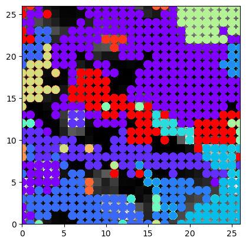
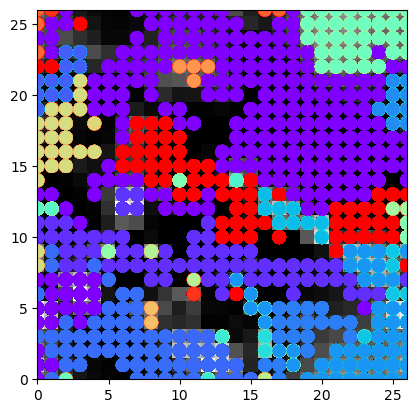
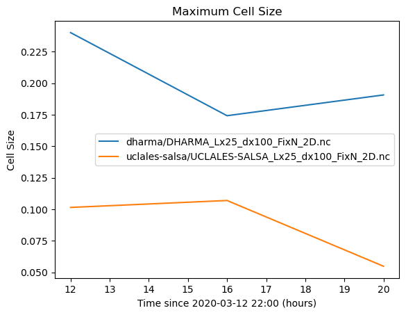

2D plotting of LES output vs. satellite imagery (work in progress)#
The below notebook compares selected simulations against observational targets that were collected from satellite and ground-based retrievals.
In case of questions or concerns, please notify Ann Fridlind (ann.fridlind@nasa.gov), Timothy Juliano (tjuliano@ucar.edu), and Florian Tornow (ft2544@columbia.edu).
import glob, os
import geopy
import geopy.distance
os.getcwd()
'/user-data-home/comble-mip/notebooks/plotting'
os.chdir("/user-data-home/comble-mip/notebooks/plotting/")
%run functions_plotting.py
%run function_plotting_2d.py
## read trajectory
ds = nc.Dataset('../../data_files/theta_temp_rh_sh_uvw_sst_along_trajectory_era5ml_28h_end_2020-03-13-18.nc')
les_time = 18. + ds['Time'][:]
## select simulations to plot
sim_keyword = 'FixN_2D'
## select times
Time_Vec = [0.,1.,2.,6.,10.,14.,18.] ## hours, where 18 h marks arrival
## select acceptable window of time
Time_Window = 15.0 ## hours
## set domain to be extracted
Spat_Window = 100.0 ## km
## convert to regular time
tprop = []
for toi in Time_Vec:
tprop.append(np.datetime64('2020-03-13T00:00:00') + np.timedelta64(int(toi),'h'))
## load satellite imagery
os.chdir("/data/project/comble-mip/satellite_imagery/viirs/")
counter_dat = 0
for file in glob.glob("*03DNB*.nc"):
## load geolocation
ds_geo = nc.Dataset("/data/project/comble-mip/satellite_imagery/viirs/" + file)
## load imagery
file_sp = file.split('.')
file_img = glob.glob(file_sp[0].replace('3','2')+'.'+file_sp[1]+'.'+file_sp[2]+'*')[0]
ds_img = nc.Dataset("/data/project/comble-mip/satellite_imagery/viirs/" + file_img)
## time
file_time = np.datetime64('2020-01-01') + np.timedelta64(int(file_sp[1][5:8])-1,'D') + np.timedelta64(int(file_sp[2][0:2]),'h')+ np.timedelta64(int(file_sp[2][2:4]),'m')
print(file)
print(file_img)
## for each requested model timestep, check if image covers right place at right time
counter_time = 0
for Time_OI in tprop:
diff_time = (file_time - np.datetime64(Time_OI))/np.timedelta64(1, 's')/3600
if np.abs(diff_time) <= Time_Window:
print(Time_OI)
Traj_time = (Time_OI - np.datetime64('2020-03-13T18:00:00'))/np.timedelta64(1, 's')/3600
Lat_OI = ds['Latitude'][ds['Time'][:]==Traj_time][0]
Lon_OI = ds['Longitude'][ds['Time'][:]==Traj_time][0]
## create spatial window around coordinate of interest
start = geopy.Point(Lat_OI, Lon_OI)
d = geopy.distance.distance(kilometers=1.2*Spat_Window/2)
LAT_MIN = d.destination(point=start, bearing=180)[0]
LAT_MAX = d.destination(point=start, bearing=0)[0]
LON_MIN = d.destination(point=start, bearing=270)[1]
LON_MAX = d.destination(point=start, bearing=90)[1]
## select pixels within window
pix_num = ((ds_geo['geolocation_data/latitude'][:] > LAT_MIN) &
(ds_geo['geolocation_data/latitude'][:] < LAT_MAX) &
(ds_geo['geolocation_data/longitude'][:] > LON_MIN)&
(ds_geo['geolocation_data/longitude'][:] < LON_MAX)).sum()
print(pix_num)
if pix_num > 0:
ds_sub = ds_img['observation_data/DNB_observations'][:,:][(ds_geo['geolocation_data/latitude'][:] > LAT_MIN) &
(ds_geo['geolocation_data/latitude'][:] < LAT_MAX) &
(ds_geo['geolocation_data/longitude'][:] > LON_MIN)&
(ds_geo['geolocation_data/longitude'][:] < LON_MAX)]
ds_lat = ds_geo['geolocation_data/latitude'][:,:][(ds_geo['geolocation_data/latitude'][:] > LAT_MIN) &
(ds_geo['geolocation_data/latitude'][:] < LAT_MAX) &
(ds_geo['geolocation_data/longitude'][:] > LON_MIN)&
(ds_geo['geolocation_data/longitude'][:] < LON_MAX)]
ds_lon = ds_geo['geolocation_data/longitude'][:,:][(ds_geo['geolocation_data/latitude'][:] > LAT_MIN) &
(ds_geo['geolocation_data/latitude'][:] < LAT_MAX) &
(ds_geo['geolocation_data/longitude'][:] > LON_MIN)&
(ds_geo['geolocation_data/longitude'][:] < LON_MAX)]
da = xr.DataArray(
name = 'alb',
data = ds_sub,
dims = ['pixel'],
coords = dict(
lon = (['pixel'],ds_lon),
lat = (['pixel'],ds_lat)
))
## compute meridional and latitudal distance to center
da['x_dist'] = 0*da['lat']
da['y_dist'] = 0*da['lat']
for ii in range(len(ds_sub)):
da['x_dist'][ii] = geopy.distance.geodesic((da['lat'][ii],da['lon'][ii]),
(da['lat'][ii],Lon_OI)).km * np.sign((da['lon'][ii].data - Lon_OI))
da['y_dist'][ii] = geopy.distance.geodesic((da['lat'][ii],da['lon'][ii]),
(Lat_OI,da['lon'][ii])).km * np.sign((da['lat'][ii].data - Lat_OI))
## limit to requested size
da = da[np.abs(da['x_dist']) <= Spat_Window/2]
da = da[np.abs(da['y_dist']) <= Spat_Window/2]
## normalize radiance values to resemble LES pseudo-albedo
da.data = ((da.data - da.data.min())/(da.data.max() - da.data.min()))*0.8
da['x_round'] = np.round(da['x_dist'])
da['y_round'] = np.round(da['y_dist'])
for yy in np.unique(da['y_round']):
da_sub = da[da['y_round'] == yy]
da_stat = da_sub.groupby('x_round').mean()
da_stat['y_round'] = np.float64(yy)
if yy == np.unique(da['y_round'])[0]:
da_stat_stack = xr.concat([da_stat],dim='y_round')
else:
da_stat_stack = xr.concat([da_stat_stack,da_stat],dim='y_round')
da_stat_stack['time'] = Time_OI
da_stat_stack['time_diff'] = diff_time
if counter_time == 0:
da_stat_stst = xr.concat([da_stat_stack],dim='time')
else:
da_stat_stst = xr.concat([da_stat_stst,da_stat_stack],dim='time')
counter_time += 1
da_stat_stst['Source'] = file_sp[0]+'.'+file_sp[1]+'.'+file_sp[2]
if counter_dat == 0:
da_stat_ststst = xr.concat([da_stat_stst],dim='Source')
else:
da_stat_ststst = xr.concat([da_stat_ststst,da_stat_stst],dim='Source')
counter_dat += 1
VNP03DNB.A2020073.1306.002.2021125004801.nc
VNP02DNB.A2020073.1306.002.2021126174604.nc
2020-03-13T00:00:00
25855
2020-03-13T01:00:00
25659
2020-03-13T02:00:00
25653
2020-03-13T06:00:00
25511
2020-03-13T10:00:00
0
2020-03-13T14:00:00
0
2020-03-13T18:00:00
0
VJ103DNB.A2020073.1212.002.2020073175644.nc
VJ102DNB.A2020073.1212.002.2020073182754.nc
2020-03-13T00:00:00
26080
2020-03-13T01:00:00
26047
2020-03-13T02:00:00
26107
2020-03-13T06:00:00
26105
2020-03-13T10:00:00
26252
2020-03-13T14:00:00
26211
2020-03-13T18:00:00
26395
da_stat_ststst.plot(row='time',col='Source')
<xarray.plot.facetgrid.FacetGrid at 0x7f26ae218640>
os.chdir("/user-data-home/comble-mip/notebooks/plotting/")
%run functions_plotting.py
var_vec_2d = ['alb','opt']
## load all simulations located in subfolders of the given directory
df_col_2d = load_sims_2d('/data/project/comble-mip/output_les/',var_vec_2d,t_shift=-2,keyword=sim_keyword,times=[t for t in Time_Vec if t > 0],coarsen=True)
Loading variables: f(time,x,y)
/data/project/comble-mip/output_les/wrf/WRF_Lx25_dx100_FixN_2D.nc
ERROR 1: PROJ: proj_create_from_database: Open of /opt/conda/share/proj failed
NaN values in alb
NaN values in opt
/data/project/comble-mip/output_les/dharma/DHARMA_Lx25_dx100_FixN_2D.nc
/data/project/comble-mip/output_les/uclales-salsa/UCLALES-SALSA_Lx25_dx100_FixN_2D.nc
...adjusting x and y values
#df_col_2d['alb'].plot(row='time',col_wrap=7,col='Source')
xr.merge([df_col_2d['alb'],da_stat_ststst.drop('time_diff')])['alb'].plot(row='time',col='Source')
/tmp/ipykernel_134/3852338689.py:1: DeprecationWarning: dropping variables using `drop` is deprecated; use drop_vars.
xr.merge([df_col_2d['alb'],da_stat_ststst.drop('time_diff')])['alb'].plot(row='time',col='Source')
<xarray.plot.facetgrid.FacetGrid at 0x7f26a41260e0>
xr.merge([df_col_2d['alb'],da_stat_ststst.drop_vars('time_diff')]).isel(Source=3)
<xarray.Dataset> Size: 573kB
Dimensions: (x_round: 101, time: 7, y_round: 101)
Coordinates:
* x_round (x_round) float64 808B -50.0 -49.0 -48.0 -47.0 ... 48.0 49.0 50.0
* time (time) datetime64[ns] 56B 2020-03-13 ... 2020-03-13T18:00:00
Source <U49 196B 'uclales-salsa/UCLALES-SALSA_Lx25_dx100_FixN_2D.nc'
* y_round (y_round) float64 808B -50.0 -49.0 -48.0 -47.0 ... 48.0 49.0 50.0
Data variables:
alb (y_round, x_round, time) float64 571kB nan nan nan ... nan nan nan
Attributes:
units: 1
long_name: pseudo-albedodf_col_2d_tot.isel(Source=0)
<xarray.Dataset> Size: 573kB
Dimensions: (x_round: 101, time: 7, y_round: 101)
Coordinates:
* x_round (x_round) float64 808B -50.0 -49.0 -48.0 -47.0 ... 48.0 49.0 50.0
* time (time) datetime64[ns] 56B 2020-03-13 ... 2020-03-13T18:00:00
Source <U49 196B 'VJ103DNB.A2020073.1212'
* y_round (y_round) float64 808B -50.0 -49.0 -48.0 -47.0 ... 48.0 49.0 50.0
Data variables:
alb (y_round, x_round, time) float64 571kB nan nan ... 0.09552 0.1255
Attributes:
units: 1
long_name: pseudo-albedodf_col_2d_tot.isel(Source=ss)['time'].isel(time=tt)
<xarray.DataArray 'time' ()> Size: 8B
array('2020-03-13T18:00:00.000000000', dtype='datetime64[ns]')
Coordinates:
time datetime64[ns] 8B 2020-03-13T18:00:00
Source <U49 196B 'dharma/DHARMA_Lx25_dx100_FixN_2D.nc'
Attributes:
long_name: timeimport os, sys, tarfile
from pathlib import Path
import netCDF4 as nc
from numpy import *
import matplotlib.pyplot as plt
import glob
import pandas as pd
## test to apply clustering algorithm ###
## certain properties
RES_ORG = 0.1
RES_CLA = 1.0
## use both obs and LES
df_col_2d_tot = xr.merge([df_col_2d,da_stat_ststst.drop_vars('time_diff')])
## certain thresholds
counter = 0
for ss in [2,3]:
print(df_col_2d_tot.isel(Source=ss)['Source'].data)
print('-----')
tt_vec = len(df_col_2d_tot.isel(Source=ss)['time'])
for tt in range(4,tt_vec):
pseudo_alb = df_col_2d_tot['alb'].isel(time=tt).isel(Source=ss).data
pseudo_alb[np.isnan(pseudo_alb)] = 0
#if 'opt' in df_col_2d_tot.isel(Source=ss).keys():
if sum(np.isnan(df_col_2d_tot.isel(Source=ss)['opt']) == 0):
pseudo_alb = df_col_2d_tot['alb'].isel(time=tt).isel(Source=ss).sel(x_round=slice(np.min(df_col_2d['x_round']),np.max(df_col_2d['x_round']))).sel(y_round=slice(np.min(df_col_2d['y_round']),np.max(df_col_2d['y_round']))).data
opd_cloud = df_col_2d_tot['opt'].isel(time=tt).isel(Source=ss).sel(x_round=slice(np.min(df_col_2d['x_round']),np.max(df_col_2d['x_round']))).sel(y_round=slice(np.min(df_col_2d['y_round']),np.max(df_col_2d['y_round']))).data
THRES_CONNECT = np.nanquantile(pseudo_alb[(opd_cloud) > 2.0],0.50)
THRES_CLOUD = np.nanquantile(pseudo_alb[(opd_cloud) > 2.0],0.50)
else:
print('here!')
THRES_CONNECT = np.nanquantile(pseudo_alb,0.50)
THRES_CLOUD = np.nanquantile(pseudo_alb,0.50)
print(THRES_CONNECT)
print(THRES_CLOUD)
if sum(pseudo_alb > THRES_CLOUD) > 1:
CLUST_COORDS = id_watershed(pseudo_alb,THRES_CLOUD,THRES_CONNECT,plotting=True)
CLUST_GEOM = cluster_geometry(CLUST_COORDS,total=[(shape(pseudo_alb)[0]*shape(pseudo_alb)[1])])
CLUST_GEOM['time'] = df_col_2d_tot.isel(time=tt).isel(Source=ss)['time'].data
CLUST_GEOM['Source'] = df_col_2d_tot.isel(time=tt).isel(Source=ss)['Source'].data
print(CLUST_GEOM)
if counter == 0:
CLUST_GEOM_COL = pd.concat([CLUST_GEOM])
else:
CLUST_GEOM_COL = pd.concat([CLUST_GEOM_COL,CLUST_GEOM])
counter +=1
## coarsen field
#var_coarse = coarsen_2d(pseudo_alb,RES_CLA=RES_CLA,RES_ORG=RES_ORG)
#nx_coa = var_coarse.shape[0]
#plt.imshow(df_col_2d['alb'].isel(time=3).isel(Source=1).data)


17_17
1_1
2_2
3_3
4_4
5_5
6_6
7_7
8_8
9_9
10_10
11_11
12_12
13_13
14_14
15_15
16_16
slope intercept area time \
cluster
1 3.469425e-01 -4.779169 0.054870 2020-03-13 18:00:00
2 1.890392e-02 23.803503 0.048011 2020-03-13 18:00:00
3 1.010830e+00 2.581227 0.020576 2020-03-13 18:00:00
4 -5.000000e-01 7.615385 0.017833 2020-03-13 18:00:00
5 -4.529412e-01 19.547059 0.012346 2020-03-13 18:00:00
6 -3.296171e-15 12.500000 0.005487 2020-03-13 18:00:00
7 4.615380e-15 21.750000 0.005487 2020-03-13 18:00:00
8 0.000000e+00 24.666667 0.004115 2020-03-13 18:00:00
9 1.556420e-01 0.009728 0.002743 2020-03-13 18:00:00
10 0.000000e+00 8.500000 0.002743 2020-03-13 18:00:00
11 5.538462e-01 0.069231 0.002743 2020-03-13 18:00:00
Source
cluster
1 uclales-salsa/UCLALES-SALSA_Lx25_dx100_FixN_2D.nc
2 uclales-salsa/UCLALES-SALSA_Lx25_dx100_FixN_2D.nc
3 uclales-salsa/UCLALES-SALSA_Lx25_dx100_FixN_2D.nc
4 uclales-salsa/UCLALES-SALSA_Lx25_dx100_FixN_2D.nc
5 uclales-salsa/UCLALES-SALSA_Lx25_dx100_FixN_2D.nc
6 uclales-salsa/UCLALES-SALSA_Lx25_dx100_FixN_2D.nc
7 uclales-salsa/UCLALES-SALSA_Lx25_dx100_FixN_2D.nc
8 uclales-salsa/UCLALES-SALSA_Lx25_dx100_FixN_2D.nc
9 uclales-salsa/UCLALES-SALSA_Lx25_dx100_FixN_2D.nc
10 uclales-salsa/UCLALES-SALSA_Lx25_dx100_FixN_2D.nc
11 uclales-salsa/UCLALES-SALSA_Lx25_dx100_FixN_2D.nc
CLUST_GEOM_COL
| slope | intercept | area | time | Source | |
|---|---|---|---|---|---|
| cluster | |||||
| 1 | -5.557001e-01 | 23.054708 | 0.240055 | 2020-03-13 10:00:00 | dharma/DHARMA_Lx25_dx100_FixN_2D.nc |
| 2 | -2.608696e-01 | 30.108696 | 0.030178 | 2020-03-13 10:00:00 | dharma/DHARMA_Lx25_dx100_FixN_2D.nc |
| 3 | -2.594810e-02 | 4.003992 | 0.021948 | 2020-03-13 10:00:00 | dharma/DHARMA_Lx25_dx100_FixN_2D.nc |
| 4 | -1.605263e+00 | 30.615789 | 0.020576 | 2020-03-13 10:00:00 | dharma/DHARMA_Lx25_dx100_FixN_2D.nc |
| 5 | 1.818182e-01 | 7.363636 | 0.005487 | 2020-03-13 10:00:00 | dharma/DHARMA_Lx25_dx100_FixN_2D.nc |
| 1 | -3.475974e-01 | 18.364211 | 0.174211 | 2020-03-13 14:00:00 | dharma/DHARMA_Lx25_dx100_FixN_2D.nc |
| 2 | -8.960436e-01 | 9.320685 | 0.079561 | 2020-03-13 14:00:00 | dharma/DHARMA_Lx25_dx100_FixN_2D.nc |
| 1 | -1.216006e-01 | 20.808542 | 0.190672 | 2020-03-13 18:00:00 | dharma/DHARMA_Lx25_dx100_FixN_2D.nc |
| 2 | -8.306709e-02 | 18.591054 | 0.042524 | 2020-03-13 18:00:00 | dharma/DHARMA_Lx25_dx100_FixN_2D.nc |
| 3 | 4.962095e-01 | -6.105445 | 0.027435 | 2020-03-13 18:00:00 | dharma/DHARMA_Lx25_dx100_FixN_2D.nc |
| 4 | 1.177255e-17 | 1.000000 | 0.002743 | 2020-03-13 18:00:00 | dharma/DHARMA_Lx25_dx100_FixN_2D.nc |
| 5 | 5.828618e-16 | 3.000000 | 0.002743 | 2020-03-13 18:00:00 | dharma/DHARMA_Lx25_dx100_FixN_2D.nc |
| 1 | -1.110433e-01 | 9.460152 | 0.101509 | 2020-03-13 10:00:00 | uclales-salsa/UCLALES-SALSA_Lx25_dx100_FixN_2D.nc |
| 2 | -1.683633e-01 | 23.435418 | 0.046639 | 2020-03-13 10:00:00 | uclales-salsa/UCLALES-SALSA_Lx25_dx100_FixN_2D.nc |
| 3 | -2.682927e-01 | 4.841463 | 0.016461 | 2020-03-13 10:00:00 | uclales-salsa/UCLALES-SALSA_Lx25_dx100_FixN_2D.nc |
| 4 | 8.285714e-01 | 19.885714 | 0.015089 | 2020-03-13 10:00:00 | uclales-salsa/UCLALES-SALSA_Lx25_dx100_FixN_2D.nc |
| 5 | -2.142857e-01 | 25.000000 | 0.013717 | 2020-03-13 10:00:00 | uclales-salsa/UCLALES-SALSA_Lx25_dx100_FixN_2D.nc |
| 6 | 1.475410e-01 | 2.655738 | 0.010974 | 2020-03-13 10:00:00 | uclales-salsa/UCLALES-SALSA_Lx25_dx100_FixN_2D.nc |
| 7 | 1.578947e-01 | -2.894737 | 0.009602 | 2020-03-13 10:00:00 | uclales-salsa/UCLALES-SALSA_Lx25_dx100_FixN_2D.nc |
| 8 | -1.666667e-01 | 29.433333 | 0.006859 | 2020-03-13 10:00:00 | uclales-salsa/UCLALES-SALSA_Lx25_dx100_FixN_2D.nc |
| 9 | -6.308932e-16 | 25.500000 | 0.005487 | 2020-03-13 10:00:00 | uclales-salsa/UCLALES-SALSA_Lx25_dx100_FixN_2D.nc |
| 10 | 4.032496e-01 | 0.015510 | 0.002743 | 2020-03-13 10:00:00 | uclales-salsa/UCLALES-SALSA_Lx25_dx100_FixN_2D.nc |
| 11 | 2.500000e-01 | 0.250000 | 0.002743 | 2020-03-13 10:00:00 | uclales-salsa/UCLALES-SALSA_Lx25_dx100_FixN_2D.nc |
| 12 | 1.919649e-15 | 26.000000 | 0.002743 | 2020-03-13 10:00:00 | uclales-salsa/UCLALES-SALSA_Lx25_dx100_FixN_2D.nc |
| 1 | -4.313764e-01 | 28.684830 | 0.106996 | 2020-03-13 14:00:00 | uclales-salsa/UCLALES-SALSA_Lx25_dx100_FixN_2D.nc |
| 2 | -2.809829e-01 | 4.483040 | 0.087791 | 2020-03-13 14:00:00 | uclales-salsa/UCLALES-SALSA_Lx25_dx100_FixN_2D.nc |
| 3 | 9.798995e-02 | 1.688442 | 0.028807 | 2020-03-13 14:00:00 | uclales-salsa/UCLALES-SALSA_Lx25_dx100_FixN_2D.nc |
| 4 | -6.122520e-16 | 12.000000 | 0.002743 | 2020-03-13 14:00:00 | uclales-salsa/UCLALES-SALSA_Lx25_dx100_FixN_2D.nc |
| 5 | 1.189213e-15 | 12.000000 | 0.002743 | 2020-03-13 14:00:00 | uclales-salsa/UCLALES-SALSA_Lx25_dx100_FixN_2D.nc |
| 6 | -3.267244e-15 | 26.000000 | 0.002743 | 2020-03-13 14:00:00 | uclales-salsa/UCLALES-SALSA_Lx25_dx100_FixN_2D.nc |
| 7 | 1.684270e-16 | 22.000000 | 0.002743 | 2020-03-13 14:00:00 | uclales-salsa/UCLALES-SALSA_Lx25_dx100_FixN_2D.nc |
| 1 | 3.469425e-01 | -4.779169 | 0.054870 | 2020-03-13 18:00:00 | uclales-salsa/UCLALES-SALSA_Lx25_dx100_FixN_2D.nc |
| 2 | 1.890392e-02 | 23.803503 | 0.048011 | 2020-03-13 18:00:00 | uclales-salsa/UCLALES-SALSA_Lx25_dx100_FixN_2D.nc |
| 3 | 1.010830e+00 | 2.581227 | 0.020576 | 2020-03-13 18:00:00 | uclales-salsa/UCLALES-SALSA_Lx25_dx100_FixN_2D.nc |
| 4 | -5.000000e-01 | 7.615385 | 0.017833 | 2020-03-13 18:00:00 | uclales-salsa/UCLALES-SALSA_Lx25_dx100_FixN_2D.nc |
| 5 | -4.529412e-01 | 19.547059 | 0.012346 | 2020-03-13 18:00:00 | uclales-salsa/UCLALES-SALSA_Lx25_dx100_FixN_2D.nc |
| 6 | -3.296171e-15 | 12.500000 | 0.005487 | 2020-03-13 18:00:00 | uclales-salsa/UCLALES-SALSA_Lx25_dx100_FixN_2D.nc |
| 7 | 4.615380e-15 | 21.750000 | 0.005487 | 2020-03-13 18:00:00 | uclales-salsa/UCLALES-SALSA_Lx25_dx100_FixN_2D.nc |
| 8 | 0.000000e+00 | 24.666667 | 0.004115 | 2020-03-13 18:00:00 | uclales-salsa/UCLALES-SALSA_Lx25_dx100_FixN_2D.nc |
| 9 | 1.556420e-01 | 0.009728 | 0.002743 | 2020-03-13 18:00:00 | uclales-salsa/UCLALES-SALSA_Lx25_dx100_FixN_2D.nc |
| 10 | 0.000000e+00 | 8.500000 | 0.002743 | 2020-03-13 18:00:00 | uclales-salsa/UCLALES-SALSA_Lx25_dx100_FixN_2D.nc |
| 11 | 5.538462e-01 | 0.069231 | 0.002743 | 2020-03-13 18:00:00 | uclales-salsa/UCLALES-SALSA_Lx25_dx100_FixN_2D.nc |
cluster_geometry(CLUST_COORDS,total=[(shape(pseudo_alb)[0]*shape(pseudo_alb)[1])])
| slope | intercept | area | |
|---|---|---|---|
| cluster | |||
| 1 | 3.469425e-01 | -4.779169 | 0.054870 |
| 2 | 1.890392e-02 | 23.803503 | 0.048011 |
| 3 | 1.010830e+00 | 2.581227 | 0.020576 |
| 4 | -5.000000e-01 | 7.615385 | 0.017833 |
| 5 | -4.529412e-01 | 19.547059 | 0.012346 |
| 6 | -3.296171e-15 | 12.500000 | 0.005487 |
| 7 | 4.615380e-15 | 21.750000 | 0.005487 |
| 8 | 0.000000e+00 | 24.666667 | 0.004115 |
| 9 | 1.556420e-01 | 0.009728 | 0.002743 |
| 10 | 0.000000e+00 | 8.500000 | 0.002743 |
| 11 | 5.538462e-01 | 0.069231 | 0.002743 |
CLUST_GEOM_COL['time_conv'] = (pd.to_datetime(CLUST_GEOM_COL['time']) - pd.to_datetime('2020-03-12 22:00:00')).astype('timedelta64[h]')
#p#lt.hist(CLUST_GEOM_COL['area'],label=CLUST_GEOM_COL['Source'])
CLUST_GEOM_COL.groupby('Source')['area'].hist(alpha=0.75)
CLUST_STAT_1 = CLUST_GEOM_COL.groupby(['Source','time_conv'])['area'].size()
CLUST_STAT_2 = CLUST_GEOM_COL.groupby(['Source','time_conv'])['area'].max()
CLUST_STAT_1
Source time_conv
dharma/DHARMA_Lx25_dx100_FixN_2D.nc 12.0 5
16.0 2
20.0 5
uclales-salsa/UCLALES-SALSA_Lx25_dx100_FixN_2D.nc 12.0 12
16.0 7
20.0 11
Name: area, dtype: int64
for name,j in CLUST_STAT_1.groupby('Source'):
j[name].plot(title='Number of Cells',xlabel='Time since 2020-03-12 22:00 (hours)',ylabel='Number of Cells',label=name,legend=True)

for name,j in CLUST_STAT_2.groupby('Source'):
j[name].plot(title='Maximum Cell Size',xlabel='Time since 2020-03-12 22:00 (hours)',ylabel='Cell Size',label=name,legend=True)

CLUST_GEOM_COL['Clust'] = CLUST_GEOM_COL.index
fig, axes = plt.subplots(nrows=2, ncols=3)
for ax, col in zip(axes.flat, CLUST_GEOM_COL.groupby(['Source','time_conv'])):
print(col[0][0])
model = col[0][0][0:7]
time = col[0][1]
ax.pie(col[1]['area'],labels=col[1].index,autopct='%.1f',)
ax.set(ylabel=model, title=time, aspect='equal')
dharma/DHARMA_Lx25_dx100_FixN_2D.nc
dharma/DHARMA_Lx25_dx100_FixN_2D.nc
dharma/DHARMA_Lx25_dx100_FixN_2D.nc
uclales-salsa/UCLALES-SALSA_Lx25_dx100_FixN_2D.nc
uclales-salsa/UCLALES-SALSA_Lx25_dx100_FixN_2D.nc
uclales-salsa/UCLALES-SALSA_Lx25_dx100_FixN_2D.nc
fig, ax = plt.subplots(1, 6, figsize=(10,8))
ax = iter(ax)
for s, g in CLUST_GEOM_COL.groupby(['Source']):
for t, f in g.groupby(['time']):
#print(f)
f.set_index('Clust')['area'].plot.pie(ax=next(ax), autopct='%.1f', title=f'{s}')
/tmp/ipykernel_134/256441689.py:3: FutureWarning: In a future version of pandas, a length 1 tuple will be returned when iterating over a groupby with a grouper equal to a list of length 1. Don't supply a list with a single grouper to avoid this warning.
for s, g in CLUST_GEOM_COL.groupby(['Source']):
/tmp/ipykernel_134/256441689.py:4: FutureWarning: In a future version of pandas, a length 1 tuple will be returned when iterating over a groupby with a grouper equal to a list of length 1. Don't supply a list with a single grouper to avoid this warning.
for t, f in g.groupby(['time']):
/tmp/ipykernel_134/256441689.py:4: FutureWarning: In a future version of pandas, a length 1 tuple will be returned when iterating over a groupby with a grouper equal to a list of length 1. Don't supply a list with a single grouper to avoid this warning.
for t, f in g.groupby(['time']):
fig, ax = plt.subplots(1, 2, figsize=(10,8))
ax = iter(ax)
for t, g in CLUST_GEOM_COL.groupby(['Source']):
g.set_index('Clust').groupby('time')['area'].plot.pie(ax=next(ax), autopct='%.1f', title=f'{t}')
/tmp/ipykernel_134/766387201.py:3: FutureWarning: In a future version of pandas, a length 1 tuple will be returned when iterating over a groupby with a grouper equal to a list of length 1. Don't supply a list with a single grouper to avoid this warning.
for t, g in CLUST_GEOM_COL.groupby(['Source']):
CLUST_COORDS_BIG = CLUST_COORDS.copy()
CLUST_COORDS_BIG['x'] = (CLUST_COORDS['x']*RES_CLA/RES_ORG) + (RES_CLA/RES_ORG - 1)/2
CLUST_COORDS_BIG['y'] = (CLUST_COORDS['y']*RES_CLA/RES_ORG) + (RES_CLA/RES_ORG - 1)/2
CLUST_GEOM = cluster_geometry(CLUST_COORDS_BIG,total=[(shape(pseudo_alb)[0]*shape(pseudo_alb)[1])])
CLUST_GEOM['time'] = 1
pd.concat([CLUST_GEOM,CLUST_GEOM])
plt.scatter(CLUST_GEOM.index,CLUST_GEOM.area)
## select simulations to plot
sim_keyword = 'DHARMA_Lx25_dx100_FixN_2D' #UCLALES-SALSA_Lx25_dx100_FixN_2D'
os.chdir("/user-data-home/comble-mip/notebooks/plotting/")
%run functions_plotting.py
## load all simulations located in subfolders of the given directory
df_col_2d = load_sims_2d('/data/project/comble-mip/output_les/',var_vec_2d,t_shift=-2,keyword=sim_keyword,times=[t for t in Time_Vec if t > 0],coarsen=True)
var_vec_2d = ['olr11']
df_col_2d['olr11'].plot(row='time',col_wrap=7,col='Source')
df_col_2d['olr11'].isel(time=0)